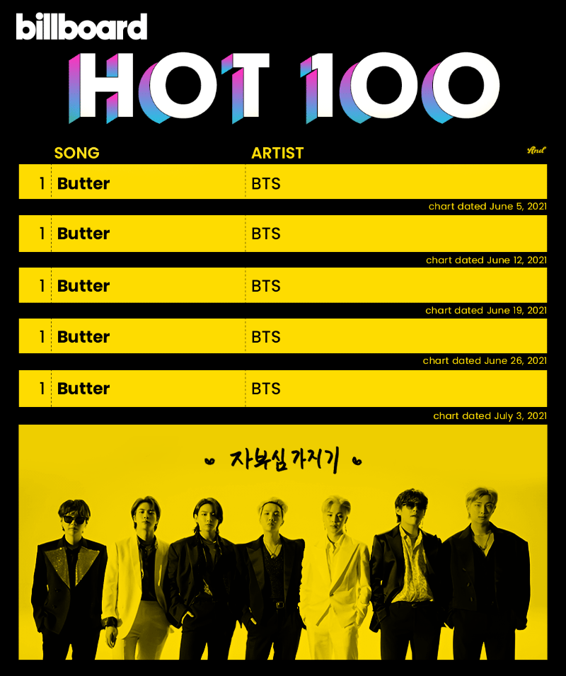

버터'가 지난주 핫 100에서 4위를 기록하면서 BTS는 10주 만에 장기집권을 끝냈다. 미국에서 가장 인기 있는 곡을 가리는 핫 100은 음원 다운로드 및 실물 음반 판매량과 스트리밍 수치, 라디오 방송 횟수를 합산해 순위를 낸다.
'버터'는 발매 12주 차인 지난 6일부터 12일까지 6만2천900건 다운로드됐다. 전주보다 20% 감소한 수치지만, 1위를 기록한 더 키드 라로이와 저스틴 비버의 '스테이'(1만2천700건)보다도 약 5배 많다.
이에 따라 '버터'는 빌보드 세부 차트인 디지털 송 세일즈 차트에서 11주째 1위를 지켰다. 발매된 지 석 달이 됐음에도 팬들인 '아미'의 화력이 꺼지지 않고 있다는 것을 알 수 있는 대목이다.